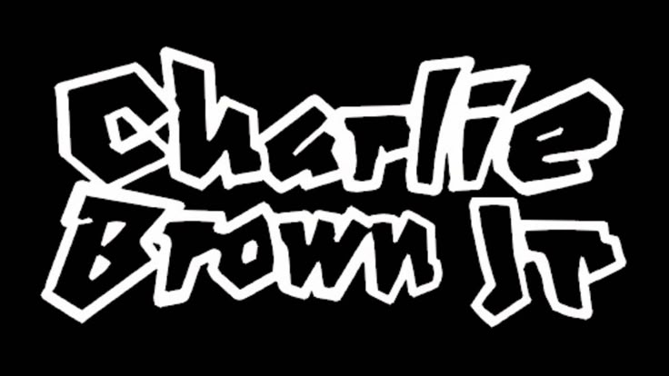
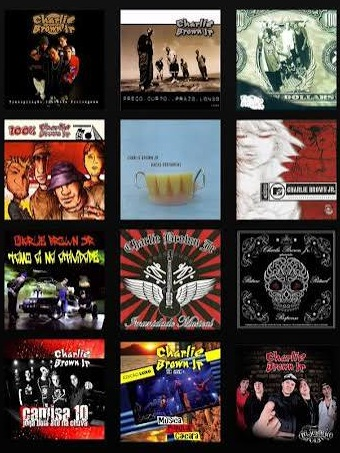

A Banda
O Charlie Brown Jr. (CBJR) foi uma das bandas mais influentes do rock nacional das décadas de 1990 e 2000. Fundada em Santos no ano de 1992, a banda misturou punk rock, skate punk, reggae, hip hop e hardcore, criando um som próprio marcante e conectado com a juventude urbana. Foi uma história de amizade, talento, skate, sonhos, conflitos, reconciliações e perdas. Por trás das canções que marcaram gerações, existia um grupo de músicos que cresceu junto, conquistou o Brasil e enfrentou dificuldades que acabaram mudando o destino da banda. Vou contar a trajetória desde as origens em Santos até os acontecimentos que marcaram o fim da formação original, distinguindo os fatos conhecidos das versões pessoais dos integrantes.
Historia
O Charlie Brown Jr. surgiu em Santos, em 1992, liderado pelo vocalista Chorão, nome artístico de Alexandre
Magno Abrão. Desde a adolescência, ele era apaixonado por skate e música, influências que marcaram sua
personalidade e o estilo da banda.
Chorão começou a cantar após uma oportunidade inesperada em um bar, quando substituiu o vocalista de um grupo.
Mais tarde, conheceu o baixista Champignon, com quem desenvolveu uma importante parceria musical. O nome Charlie
Brown Jr. surgiu após Chorão bater seu carro em uma barraca de água de coco que tinha a imagem do personagem
Charlie Brown. O “Jr.” representava a ideia de que os integrantes eram filhos do rock.
A banda começou tocando em pequenos eventos e campeonatos de skate. Em 1997, lançou seu primeiro álbum por uma
grande gravadora, Transpiração Contínua Prolongada, conquistando o público com músicas como “Proibida Pra Mim”,
“O Coro Vai Comê!” e “Tudo Que Ela Gosta de Escutar”.
Seu diferencial era a mistura de rock, hardcore, rap e reggae, com letras sobre amor, amizade, liberdade,
dificuldades pessoais e superação. Ao longo dos anos, o grupo lançou grandes sucessos, como “Zóio de Lula”, “Só
os Loucos Sabem”, “Dias de Luta, Dias de Glória” e “Céu Azul”.
A trajetória da banda foi marcada pela morte de Chorão, em março de 2013, e de Champignon, em setembro do mesmo
ano. O grupo encerrou suas atividades em 2013, mas suas músicas continuam conquistando novas gerações.
O legado do Charlie Brown Jr. está na capacidade de transformar experiências, sentimentos e conflitos em músicas
que representam a juventude, a liberdade e a busca por um lugar no mundo.
Shows
Integrantes
1992 - 2001
2001 - 2005
2005 - 2008
2008 - 2011
2011 - 2013


Marcão Britto - Guitarrista
Thiago Castanho - Guitarrista
Champignon - Baixista
Renato Pelado - baterista
Marcão Britto - Guitarrista
Champignon - Baixista
Renato Pelado - Baterista
Thiago Castanho - Guitarrista
Heitor Gomes - Baixista
Pinguim - Baterista
Thiago Castanho - Guitarrista
Heitor Gomes - Baixista
Bruno Graveto - Baterista
Marcão Britto - Guitarrista
Thiago Castanho - Guitarrista
Champignon - Baixista
Bruno Graveto - Baterista


 –
–
Vocalista
Baixista
Guitarrista
Guitarrista
Baixista
Baterista
Baterista
Baterista
Discografia
10 álbuns de estúdio:

Transpiração Contínua Prolongada (1997)

Preço Curto... Prazo Longo (1999)

Nadando com os Tubarões (2000)


Bocas Ordinárias (2002)

Tamo Ái na Atividade (2004)

Imunidade Musical (2005)

Ritmo, Ritual e Responsa (2007)

Camisa 10 Joga Bola até na chuva (2009)

La Familia 013 (Póstumo) (2013)
3 álbuns ao vivo:

Acústico MTV (2003)

Música Popular Caiçara (2012)

Chegou Quem Faltava (Ao Vivo) (2021)

Música Popular Caiçara (2016)
Volume 2
6 DVDs lançados:
Ao Vivo (2002)Acústico MTV (2003)
Na Estrada (2004)
Vibration (2005)
Ritmo, Ritual e Responsa (2008)
Música Popular Caiçara (2012)
Chegou Quem Faltava (Ao Vivo) (2021)